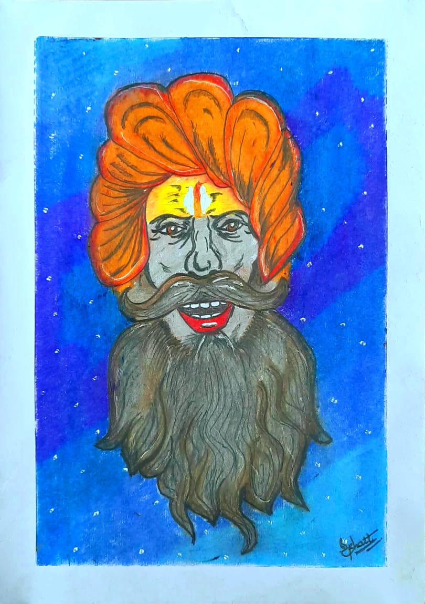
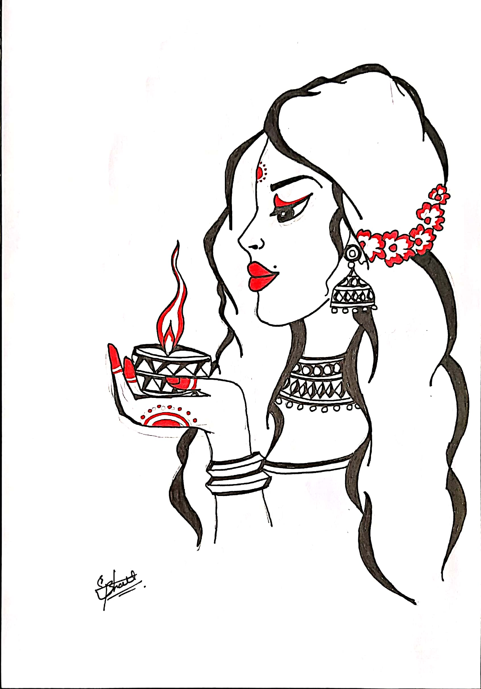
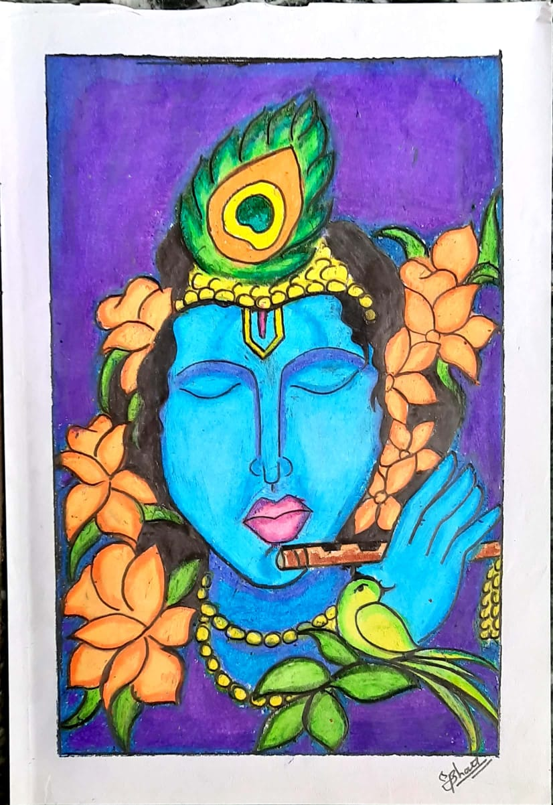

Biography
Hello, I Dipakkumar Bhupendrakumar Bhatt! such a long name right? chill you can also call me Dipu :).
Guys, I am not afraid of tomorrow; for I have seen yesterday and I love today and that's my little biography I can say.
In another way Live your life in such a way that you'll be remembered for your kindness, compassion, fairness, character, benevolence, and a force for good who had much respect for life, in general.
What a wee little part of a person's life are his acts and his words! His real life is led in his head, and is known to none but himself. All day long, the mill of his brain is grinding, and his thoughts, not those of other things, are his history. These are his life, and they are not written. Everyday would make a whole book of 80,000 words -- 365 books a year. Biographies are but the clothes and buttons of the man -- the biography of the man himself cannot be written.
“Always live your life with your biography in mind.”
Art-Attack
Are you an art lover? then must watch my art gallery!!!I think guys, life is the art of drawing without an erasor :)
How you draw is a reflection of how you feel about the world. You're not capturing it, you're interpreting it.
Drawing is the artist's most direct and spontaneous expression. A species of writing: it reveals, better than does painting, his true personality.
Drawing used to be a civilized thing to do, like reading and writing. It was taught in elementary schools. It was democratic. It was a boon to happiness.
Learning to draw is really a matter of learning to see - to see correctly - and that means a good deal more than merely looking with the eye.
About-Art

What is oil pastel drawing?
Oil pastel (also called wax oil crayon) is a painting and drawing medium with characteristics similar to pastels and wax crayons. Unlike "soft" or "Japanese" pastel sticks, which are made with a gum or methyl cellulose binder, oil pastels consist of pigment mixed with a non-drying oil and wax binder.Oil pastels were an immediate commercial success and other manufacturers were quick to take up the idea, such as Dutch company Talens, who began to produce Panda Pastels in 1930. However, none of these were comparable to the professional quality oil pastels produced today. These early products were intended to introduce western art education to Japanese children, and not as a fine arts medium, although Sakura managed to persuade some avant-garde artists to acquaint themselves with the technique, among them Pablo Picasso. In 1947, Picasso, who for many years had been unable to procure oil pastels because of the war conditions, convinced Henri Sennelier, a French manufacturer who specialized in high quality art products, to develop a fine arts version. In 1949 Sennelier produced the first oil pastels intended for professionals and experienced artists.[1] These were superior in wax viscosity, texture and pigment quality and capable of producing more consistent and attractive work. The Japanese Holbein brand of oil pastels appeared in the mid-1980s with both student and professional grades.

Use of oil pastel
Oil pastel (also called wax oil crayon) is a painting and drawing medium with characteristics similar to pastels and wax crayons. Unlike "soft" or "Japanese" pastel sticks, which are made with a gum or methyl cellulose binder, oil pastels consist of pigment mixed with a non-drying oil and wax binder.Oil pastels are considered a fast medium because they are easy to paint with and convenient to carry; for this reason they are often used for sketching, but can also be used for sustained works. Because oil pastels never dry out completely, they need to be protected somehow, often by applying a special fixative to the painting or placing the painting in a sleeve and then inside a frame. There are some known durability problems: firstly, as the oil doesn't dry, it keeps permeating the paper. This process degrades both the paper and the colour layer as it reduces the flexibility of the latter. A second problem is that the stearic acid makes the paper brittle. Lastly both the stearic acid and the wax will be prone to efflorescence or "wax bloom", the building-up of fatty acids and wax on the surface into an opaque white layer. This is easily made transparent again by gentle polishing with a woolen cloth; but the three effects together result in a colour layer consisting mainly of brittle stearic acid on top of brittle paper, a combination that will crumble easily. Oil pastel is the best color I used in my life and I highly suggest this.

Characteristic of oil pastel drawing
Oil pastel (also called wax oil crayon) is a painting and drawing medium with characteristics similar to pastels and wax crayons. Unlike "soft" or "Japanese" pastel sticks, which are made with a gum or methyl cellulose binder, oil pastels consist of pigment mixed with a non-drying oil and wax binder.The surface chosen for oil pastels can have a very dramatic effect on the final painting. Paper is a common surface but this medium can be used on other surfaces including wood, metal, hardboard (often known as "masonite"), MDF, canvas and glass. Many companies make papers specifically for pastels that are suitable for use with oil pastels.Building up layers of color with the oil pastel, called layering, is a very common technique. Other techniques include underpainting and scraping down or sgraffito. Turpentine, or similar liquids such as mineral spirits, are often used as a blending tool to create a wash effect similar to some watercolor paintings. Commercially available oil sketching papers are preferred for such technique.Scholastic grade is the lowest grade; generally the oil pastels are harder and less vibrant than higher grades. It is generally meant for children or new users of oil pastels, and is fairly inexpensive compared to other grades. The middle grade, student grade, is meant for art students and is softer and more vibrant than scholastic grade. They are usually more expensive. Professional grade is the highest grade.
Dipakkumar Bhupendrakumar Bhatt
DOB: September 26, 1996
Address: Near new police-line, Matar
Ta.Matar, Distt.Kheda
Gujarat, India
Pin_no.387530
Contact: +91 87330 48278
Email: bhattdipak980@gmail.com
Quots of the day!

"There is no love or devotion like that of a mother for her child. No language can express the power, beauty, herosim and majesty of mother's love."

"Humans were once part of the nature too. Respect the nature. Because we have plan B; but not plant B!!!"

"Love and peace of mind do protect us. They allow us to overcome the problems that life hands us. They teach us to survive… to live now… to have the courage to confront each day."

“All shadows of clouds the sun cannot hide like the moon cannot stop oceanic tide; but a hidden star can still be smiling at night's black spell on darkness, beguiling”

“Music is a language that doesn’t speak in particular words. It speaks in emotions, and if it’s in the bones, it’s in the bones.”